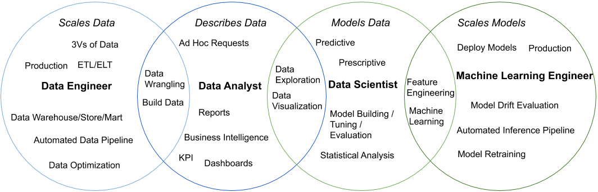

What are the different roles in data?
October 4, 2019 - 8 minutes
data scientist data engineer data analyst machine learning engineer data teamThe intended audience for this post are people interested in getting into data or businesses looking to use data to drive business value. With this in mind, I attempted to stay high level and provide enough information and key words for someone to find more in-depth resources on any given topic. Additionally, when highlighting skills, I focus on what I have observed being commonly used in industry based on experience, combing through job postings, and networking.
Working in data
In my experience, working in data can at times be a bit confusing and overwhelming because of the sheer breadth of skills and techniques that are needed to process, manage, and analyze data. In this post, I am going to group these sets of skills into different roles, highlight the order in which they should be built out, and emphasize the importance of only focusing on one role at a time. As someone who has worked in each role, my effectiveness was significantly reduced when I had to wear multiple hats.The four roles I will be focusing on in this post are Data Analyst, Data Engineer, Data Scientist, and Machine Learning Engineer. While some of these roles can be broken down to be more specific, my goal of this blog post is to stay high level and emphasize broad concepts around each role. Additionally, there are other important roles such as Data Governance and Privacy and Data Curation which I will not be covering as this post is meant to be an introduction to a data team in an organization.
And one last thing, although I do not advise trying to perform multiple roles at once, I think it can be beneficial if given the opportunity to try different roles and see what you enjoy most.
The different roles

The Data Analyst - Describes Data
In my opinion, the Data Analyst is at the heart of a data team. Their focus should be to describe data to help drive business value.
A Data Analyst should be the first role a company should hire and the expectations should be for them to come in and work with stakeholders and leadership to understand a company’s goals and business problems and how data can help drive value. Once a company’s goals and business problems have been clearly defined, the Data Analyst should seek out data, wrangle it to make it tidy (see Tidy Data by Hadley Wickham), and then deliver reports and/or dashboards to communicate the results. The Data Analyst is what I consider more of an operational role that helps a business measure key indicators to help understand the state of their business as well as make data driven decisions.
Key areas: data wrangling - data exploration - business intelligence - building dashboards (Key Performance Indicators (KPI), Operational) using tools like Tableau, PowerBI, Looker - building reports using tools like SQL Server Reporting Services (SSRS) - SQL - (optional but recommended) R or Python
The Data Engineer - Scales Data
The Data Engineer’s role is to scale an organization’s data ingestion and management.
Once a company has a firm understanding of their goals and business problems where data can help drive value, a Data Engineer can come in scale and build upon existing data processes. By scale, I mean the 3Vs of data(volume, variety, and velocity) and the ability to build automated data pipelines capable of bringing in data at the frequency a business needs to support applications, reports, dashboards, and analyses. Not only should a Data Engineer focus on Extract, transform, load (ETL) or Extract, load, transform (ELT), they should also have a good understanding of how to build optimized data warehouses/marts/stores to be useful for end users. Lastly, a Data Engineer should understand the concept of building production code, and by that I mean it needs to work consistently and reliably. In the event of an inevitable failure, it needs to fail reliably and have adequate logging so the issue can be debugged and resolved as efficiently as possible.
Key Areas: concept of production code - optimized data warehousing/mart/store - Extract, transform, load (ETL) or Extract, load, transform (ELT) - data pipelines - automation - streaming data - web scraping - tools like Talend or Informatica - SQL - Python - docker
—————————————————————
Most companies can be highly successful doing Data Analytics and Engineering well. Without these two areas in place, a Data Scientist will be ineffective since they will simply be doing a combination of Data Analytics/Engineering. Often times this leads to mismatched skill sets and expectations on both the side of the organization as well as the Data Scientist.
—————————————————————
The Data Scientist - Models Data
The role of the Data Scientist is to use machine learning and statistical techniques to develop models of data capable of predictions or prescriptions.
These models should have a focus on enhancing a business’ existing processes or develop new products that are not as feasible without machine learning techniques. This is more of a strategic role where often times the goal is to build upon the existing Data Analytic work. Similar to that of a Data Analyst, a Data Scientist will need to do data exploration and visualization to gain a better understanding of the data. Additionally, they will need to interact with business stakeholders to gain a firm understanding of company goals and business problems to help guide what models can be built that can drive value.
Key Areas: feature engineering - statistical analysis - building / tuning / evaluating machine learning models - natural language processing - computer vision - R or Python - SQL
The Machine Learning Engineer - Scale Models
The role of the Machine Learning Engineer is to scale models by deploying and managing them in a production environment.
A Machine Learning Engineer should work closely with the Data Science, Data Engineering, and Software Development teams to understand how a model needs to be deployed and build out necessary tools, APIs, or batch processes. Additionally, a Machine Learning Engineer needs to think about putting in place tools that will evaluate model performance and look for model drift to evaluate if a model needs to be retrained (great blog about this topic The Ultimate Guide to Model Retraining). Like a Data Engineer, they need to have a concept of production code since once a model is deployed, it is often their responsibility to ensure predictions are not only being returned but that they meet the necessary expectations.
Key Areas: model drift - model retraining - the concept of production code - evaluation of models in production - machine learning - feature engineering - Python - SQL - docker - automation
Overall Suggestions when working in Data
- Focus on the business problem - When starting data projects, it is easy to get distracted by all of the different available technologies. However, it is important to first focus on solving the business problem at hand versus using current “state of the art” solutions.
- Be intentional with technology selection - Whenever introducing a new piece of technology or programming language to a company, it is crucial to consider the consequences. Adding new technologies increases the overall complexity of a company’s technology stack as well as often times reducing collaboration and consumption of work across teams.
- Source Control - Regardless of role, I highly recommend all code (including SQL) is managed in a source control platform. By managing code through a source control platform, you can ensure code is accessible and changes to it over time can be tracked and managed. Depending on your team’s maturity and needs, I suggest checking out either Trunk Based or a Gitflow Development Strategy.
- Some popular source control platforms are GitHub, GitLab, and BitBucket
- In instances where Data Analysts or Data Scientists are doing analyses or ad-hoc requests, I recommend having a single repository where the code for these requests are stored and managed with loose processes around merging. This will help ensure the code is located in a more discoverable and central location. With that, a more restrictive repository(s) should be in place that requires reviews for managing code related to specific project work.
- Cloud computing is becoming more common place when working with data in organizations. AWS, Microsoft Azure, and Google all offer free tiers that can allow you to get some hands on experience even if your organization does not use cloud computing.
- Package management - With respect to R and Python, I suggest looking into utilities to manage packages to help with reproducibility.
- For R you can use packrat or renv(renv is still in development but is my preference).
- For Python, I suggest using venv. It is simple and I have never had issues using it yet.
- If you are new to Python, I also recommend checking out Anaconda. However, I will admit my experiences with using it to manage and share environments has not been great. I only recommend Anaconda as it allows you to more easily get started in Python. management](https://docs.conda.io/projects/conda/en/latest/user-guide/tasks/manage-environments.html) component to it as well.
- Docker - While managing packages is helpful, docker allows you to manage the entire environment of a script which ensures reproducibility. Dev Ops people will love you.
- A good resource for doing this in R is An Introduction to Docker for R Users by Colin Fay
- A good resource for Python is Docker